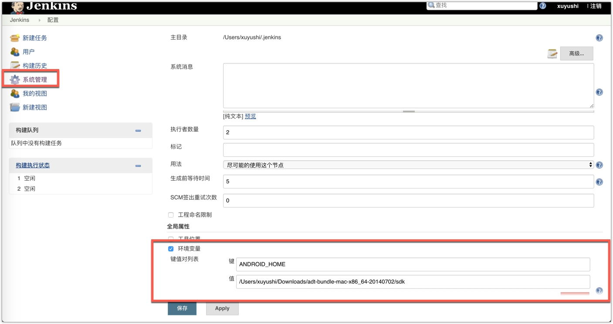
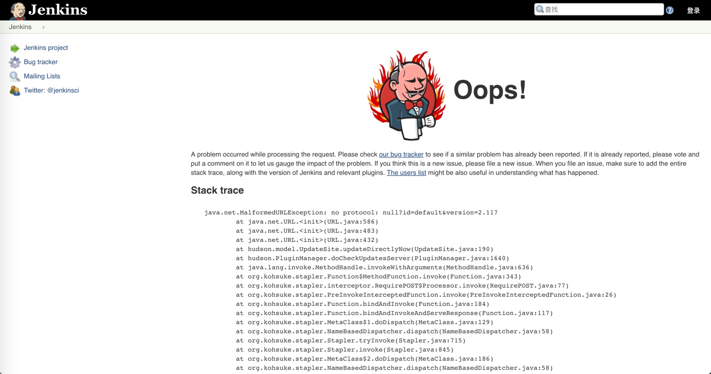
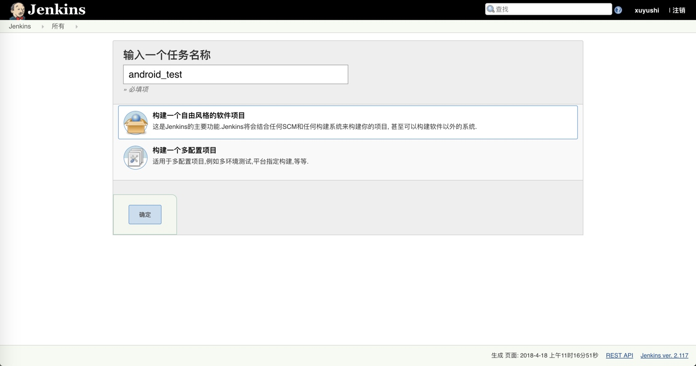
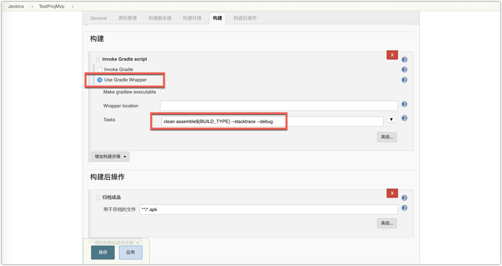
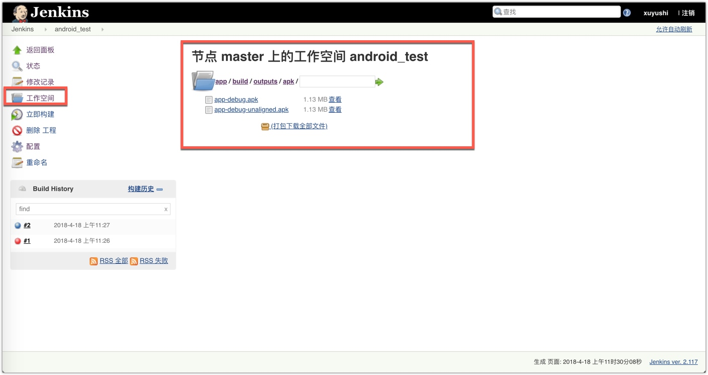

安装
java 环境搭建
java -version
如果显示Java版本号，说明已经正确安装，如果显示没有该命令，需要安装Java：
mac
brew cask install java
linux
sudo yum install java
该命令如果检测到Java不存在可以直接安装Java,如果已存在则可以升级Java
环境配置 vim /etc/profile 追加
export JAVA_HOME=/usr/lib/jvm/java-1.8.0-openjdk-1.8.0.161-0.b14.el7_4.x86_64/
export CLASSPATH=.:$JAVA_HOME/jre/lib/rt.jar:$JAVA_HOME/lib/dt.jar:$JAVA_HOME/lib/tools.jar
export PATH=$PATH:$JAVA_HOME/bin
jenkins 安装
mac
brew install jenkins
Linux
sudo wget -O /etc/yum.repos.d/jenkins.repo http://jenkins-ci.org/redhat/jenkins.repo
sudo rpm --import http://pkg.jenkins-ci.org/redhat/jenkins-ci.org.key
添加完成之后直接使用yum命令安装Jenkins:
yum install jenkins
启动
命令行直接启动
mac
Jenkins
linux
sudo service jenkins start
Starting Jenkins [ OK ]
默认端口 8080 可能冲突 需要修改
vim /etc/sysconfig/jenkins
环境配置
admin 密码 在 sudo cat /var/lib/jenkins/secrets/initialAdminPassword
启动完毕后，打开浏览器，在地址栏中输入localhost:8080
系统管理 -> 系统设置 ，填写Android 环境变量

插件管理
获取插件失败 ，需要将https 降级为http

系统管理 -> 系统设置 -> 插件管理 -> 高级
升级站点改为
http://mirrors.jenkins-ci.org/status.html
下载插件
- Gradle
- git
- gitlab
- ssh
- 等
## 新建项目 
可以增加参数化的构建

打包完后工作空间即可生成对应的打包文件

构建local 文件 需要，file:// +